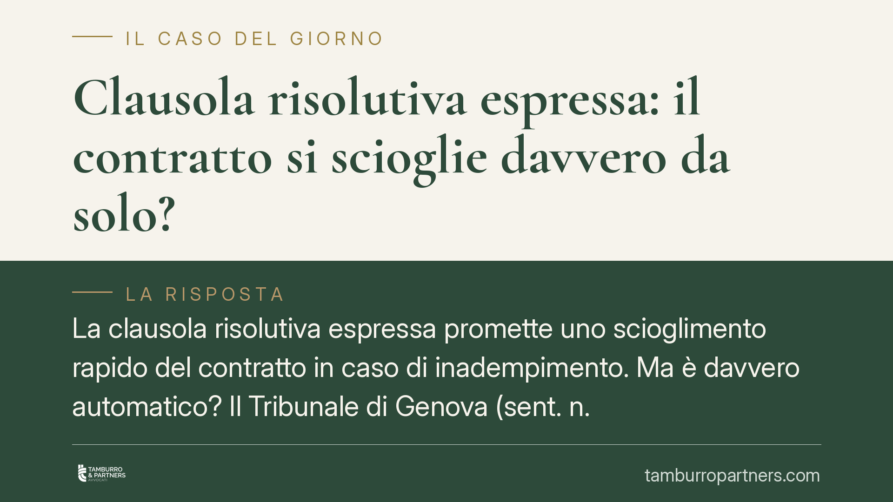

Clausola risolutiva espressa: il contratto si scioglie davvero da solo?
La clausola risolutiva espressa promette uno scioglimento rapido del contratto in caso di inadempimento. Ma è davvero automatico? Il Tribunale di Genova (sent. n. 2412/2026) ridimensiona questa idea: la clausola libera dalla valutazione sulla gravità dell'inadempimento, non dall'accertamento che l'inadempimento esista e sia imputabile al debitore. Una distinzione che pesa nella pratica.

Il caso e il principio
La clausola risolutiva espressa è uno strumento molto usato nella contrattualistica. Consente alle parti di stabilire in anticipo che, se una determinata obbligazione non viene adempiuta, il contratto si scioglie senza dover ricorrere al lungo giudizio ordinario di risoluzione.
Da qui l'equivoco diffuso: che il contratto "salti" in modo puramente automatico, appena si verifica l'inadempimento. Il Tribunale di Genova, con la sentenza n. 2412/2026, mette un punto fermo. La clausola esonera il creditore dal provare che l'inadempimento sia stato grave, ma non lo esonera dal dimostrare che l'inadempimento esista e che sia imputabile al debitore.
Inquadramento normativo
L'art. 1456 del codice civile prevede che i contraenti possano convenire espressamente che il contratto si risolva nel caso in cui una determinata obbligazione non sia adempiuta secondo le modalità stabilite. In tal caso la risoluzione si verifica di diritto quando la parte interessata dichiara all'altra che intende avvalersi della clausola.
Due elementi meritano attenzione.
Primo: la risoluzione non opera in modo automatico. Serve la dichiarazione di volersi avvalere della clausola, comunicata alla controparte. Fino a quel momento il contratto resta in vita e il creditore può, se preferisce, chiederne l'esecuzione.
Secondo: la clausola incide sul solo profilo della gravità. In un ordinario giudizio ex art. 1453 c.c. il giudice deve verificare che l'inadempimento non sia di "scarsa importanza" (art. 1455 c.c.). Con la clausola risolutiva espressa questo passaggio è precluso: le parti hanno già deciso a monte che quella specifica violazione giustifica lo scioglimento.
Resta però intatto il principio generale in tema di responsabilità: non c'è risoluzione senza un inadempimento colpevole. Se il debitore prova che la mancata prestazione dipende da causa a lui non imputabile (art. 1218 c.c.), la clausola non può operare.
Cosa cambia in concreto
Per chi redige o subisce un contratto, la lettura genovese ha conseguenze operative precise.
Per la parte non inadempiente. Non basta invocare la clausola per considerare chiuso il rapporto. Occorre poter dimostrare, in caso di contestazione, che l'obbligazione dedotta nella clausola è rimasta effettivamente inadempiuta. La formulazione della clausola diventa quindi decisiva: più è generica ("in caso di grave inadempimento"), più rischia di essere considerata di stile e inefficace; più è specifica ("il mancato pagamento anche di una sola rata alla scadenza pattuita"), più è solida.
Per il debitore. L'attivazione della clausola non è una condanna senza appello. Restano spazi difensivi: contestare che l'inadempimento si sia verificato, dimostrarne la non imputabilità, oppure eccepire che la prestazione era già stata eseguita. La clausola comprime la difesa sulla gravità, non l'intero diritto di difesa.
Un ulteriore punto pratico riguarda i tempi. Poiché la risoluzione si verifica con la dichiarazione, il momento e le modalità della comunicazione contano. Una dichiarazione ambigua, o inviata con mezzo non tracciabile, può indebolire la posizione di chi intende avvalersi della clausola.
Cosa fare in concreto
- Individua l'obbligazione specifica. In fase di redazione, indica con precisione quale inadempimento fa scattare la clausola, evitando formule generiche che i giudici tendono a svalutare.
- Formalizza la dichiarazione. Comunica per iscritto e con mezzo tracciabile (PEC o raccomandata) la volontà di avvalerti della clausola: la risoluzione decorre da quel momento.
- Raccogli la prova dell'inadempimento. Conserva solleciti, scadenzari, comunicazioni e documentazione contabile: la clausola non ti dispensa dal provare che la violazione è avvenuta.
- Valuta l'alternativa. Prima di sciogliere il contratto, verifica se l'esecuzione forzata o il risarcimento siano più convenienti: la scelta tra risoluzione ed esecuzione spetta al creditore.
- Fatti assistere sulla clausola. Consigliamo una revisione delle clausole risolutive nei contratti ricorrenti, per verificarne la reale operatività alla luce degli orientamenti giurisprudenziali.
Conclusione
La sentenza genovese non introduce una novità dirompente, ma riporta ordine su un tema spesso frainteso. La clausola risolutiva espressa è un acceleratore, non un automatismo cieco. Chi la inserisce nei propri contratti deve saperla scrivere bene e attivarla correttamente; chi la subisce conserva strumenti di difesa che non vanno dati per persi.
---
*Contributo informativo a cura di Tamburro & Partners - Avv. Giuseppe Tamburro. Non costituisce parere legale.*
Ogni contratto ha il suo equilibrio.
Se vuoi una revisione delle clausole o una redazione su misura, scrivi allo studio. Ti rispondiamo entro un giorno lavorativo.